100 question multiple choice exam
You may create a 3 inch by 5 inch handwritten note card to bring to the exam. You’ll also get a copy of the official IPA chart and our phrase structure rules.
Card Rules, exam tips and policies are at https://sites.google.com/view/matthewzaslansky/exampolicies
If you need special accommodations for the exam, book a time with the Triton Testing Center now!
You’re held to those policies, and the tips should be valuable!
We’re having a Study Party on 6/9 at 4:00-6:00pm in CENTR 222!
You’ll have time to ask questions and review in section
Your SET (Student Evaluations of Teaching) responses are now available!
If 80% of you fill out an evaluation for this course by the Thursday of Week 10, everyone gets 1% extra credit.
Currently at 7.6%.
Languages and Dialects
What are language families?
How can languages be related? How can we tell?
What are some of the major families?
Are all languages related?
When two people can understand each other when talking.
English speakers understand English speakers
Russian speakers understand Russian speakers
Russian speakers don’t understand English speakers
A geographical continuum of speakers where nearby speakers understand each other, but distant speakers might not.
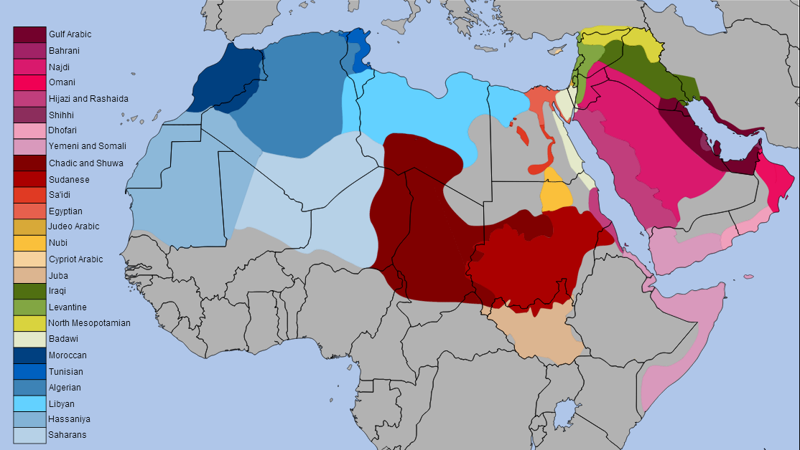
Moroccan Arabic speakers don’t understand Egyptian Arabic speakers
Ukrainian speakers understand Russian speakers (and vice versa)
Swedish, Danish and Norwegian speakers all understand each other
Brazilian Portuguese speakers understand Spanish better than the other way around
Do speakers of Amish English understand rural New Zealand speakers?
Literate English speakers use the same writing system!
Russian and Mongolian both use Cyrillic
Moroccan and Yemeni Arabic have a writing system in common, but little else.
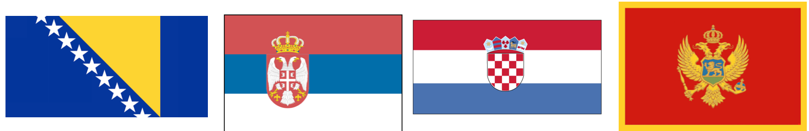
Also known as “Serbo-Croat” or “BCS”
Spoken in Bosnia & Herzegovina, Serbia, Croatia, and Montenegro
Up until the 1990s, there were four dialects, one for Bosnia, Serbia, Croatia, and Montenegro
Yugoslavia broke apart in an exceptionally bloody war
Now they’re four different languages spoken by four different peoples in four different countries

Different Dialects which could be languages, but are dialects
Languages which could be dialects, but are languages
Different Languages where speakers understand each other
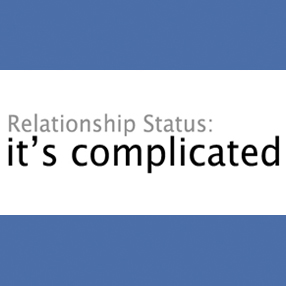
Popularized by Max Weinreich
Calling something a language or a dialect is a political choice, not a linguistic one
If you want to unite yourself with a group, they’re speaking a dialect of your language
If you want to distance yourself from a group, they’re speaking another language
… but we still have to describe the linguistic relationship!
| English | German | Dutch | Swedish | Turkish |
|---|---|---|---|---|
| Father | Vater | Vader | Far | Baba |
| Fish | Fisch | Vis | Fisk | Balik |
| Eat | Essen | Eten | äta | yemek |
| Have | Haben | Hebben | Ha | Var |
The original language from which a set of other languages developed
Languages which share a single mother
| English | German | Dutch | Swedish | Turkish |
|---|---|---|---|---|
| Father | Vater | Vader | Far | Baba |
| Fish | Fisch | Vis | Fisk | Balik |
| Eat | Essen | Eten | äta | yemek |
| Have | Haben | Hebben | Ha | Var |
Sister Languages - English, German, Dutch, Swedish
Mother Language - Proto-Germanic!
Speakers of a language inhabit a wide area
Groups of speakers become geographically or culturally isolated
The languages changes naturally, but differently for each group!
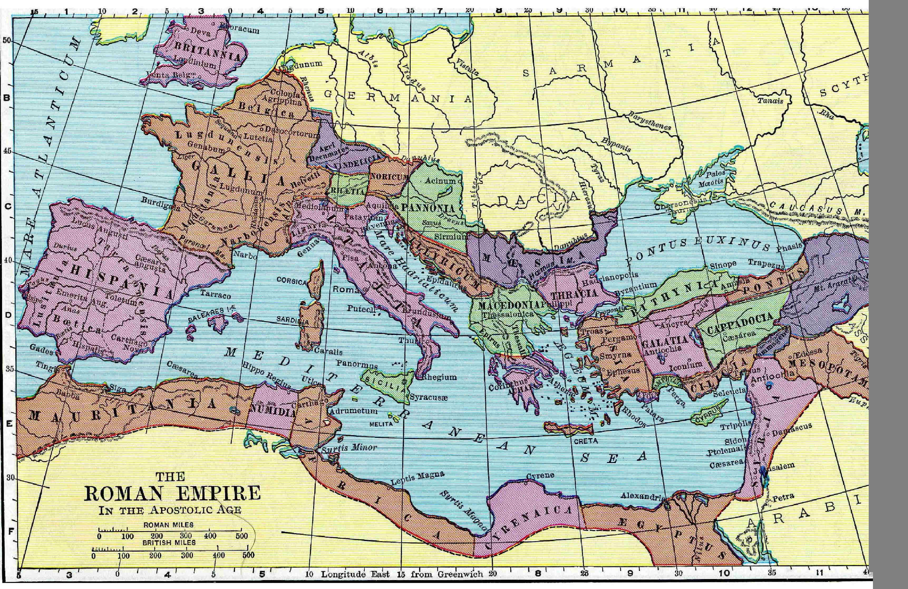
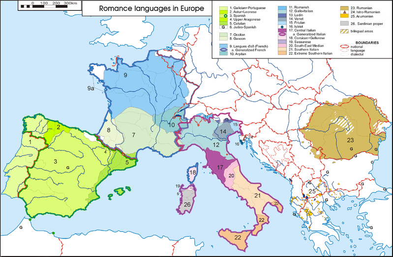
The Daughters (and grand-daughters) of Latin
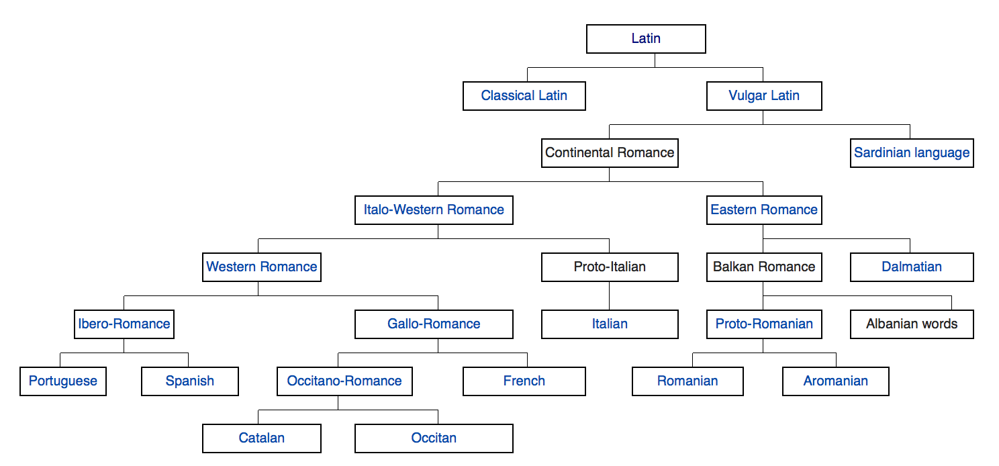
Nearby people often speak related languages
| 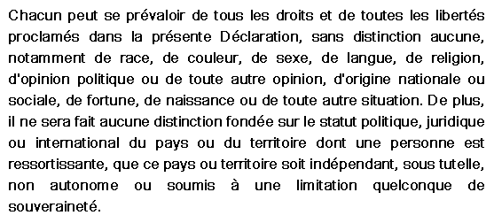 |
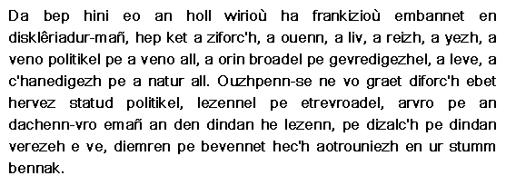
Researchers have used genetic studies to support hypotheses about linguistic and cultural connections
Words which sound similar across different languages
| English | German | Dutch | Swedish | Turkish |
|---|---|---|---|---|
| Father | Vater | Vader | Far | Baba |
| Fish | Fisch | Vis | Fisk | Balik |
| Eat | Essen | Eten | äta | yemek |
| Have | Haben | Hebben | Ha | Var |
| English | French | Italian | Spanish | Portuguese |
|---|---|---|---|---|
| zero | zéro | zero | cero | zero |
| one | un | uno | uno | um / uma |
| two | deux | due | dos | dois / duas |
| three | trois | tre | tres | três |
| four | quatre | quattro | cuatro | quatro |
Where one sound in one language systematically corresponds with another sound in another language
| English | German | Dutch | Swedish | Turkish |
|---|---|---|---|---|
| Father | Vater | Vader | Far | Baba |
| Fish | Fisch | Vis | Fisk | Balik |
| Have | Haben | Hebben | Ha | Var |
/f/ and /v/
/v/ and /b/
We look for common patterns of correspondence
Sounds will change based on how they’re produced
/d, n, l/ will often change around
(as in the Dakota, Lakota, and Nakota languages)
Systematic sound correspondence with cognates is a slam-dunk case for language relation
If a bunch of languages do things in a certain way, they may be related.
Five languages nearby with a Vocative case? Prolly related.
8 languages with tone, surrounded by languages without tone? It’s a solid bet.
If you have a few of these things, shared among some languages, you may have a…
A group of languages which share a common ancestor
| 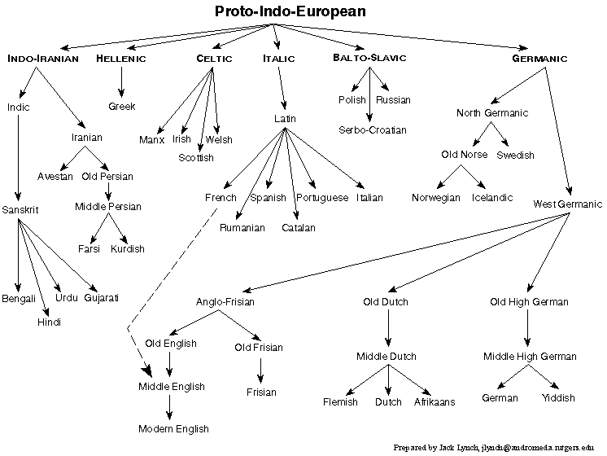 |
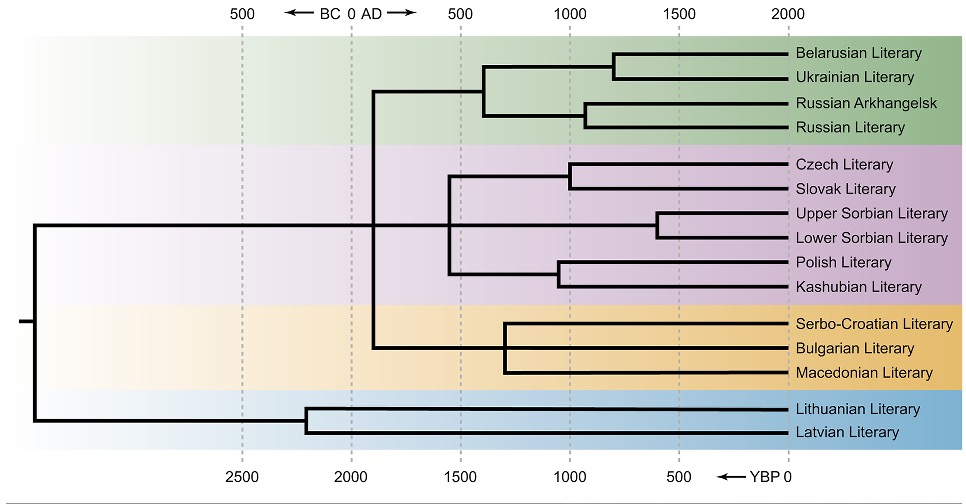
1: Find related languages
2: Reconstruct the mother tongue!
The process of looking at daughter languages and guessing what structures, sounds, and words the mother language must have had.
1: Find cognates
2: Reverse sound changes
3: Note borrowings
4: When all else fails, go with the most common form in the daughters
1: Look at the grammatical patterns and structures present
2: Find the ones that are shared among the languages
3: Pick a shared pattern or structure
4: For those that lack (or have) the pattern or structure, try and explain why
wem-, h₁reug- - ‘to vomit’
wāt-, weh₁- - ‘to blow’
*pneu- - ‘to breathe’
*(s)mei- - ‘to laugh’
ǵhasto-, ǵhazdho- - ‘stick’
Sounds changed unpredictably
Change happened for non-predictable reasons
Coincidence
… and we may never know if it’s failed!
1: Find related languages
2: Reconstruct the mother tongue!
3: Then, compare that to other mother languages.
4: Then, the mothers’ mothers…
5: If they have words, features, or structures in common, you’ve got a family!
Geography
Sound correspondences
Shared Writing Systems
Cognate words
DNA and Genetic Testing
Geography
Sound correspondences
Cognate words
DNA and Genetic Testing
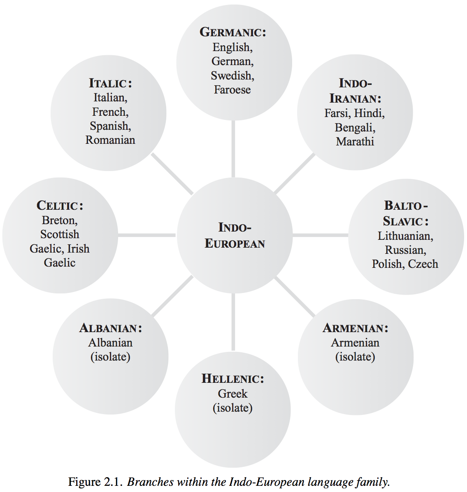

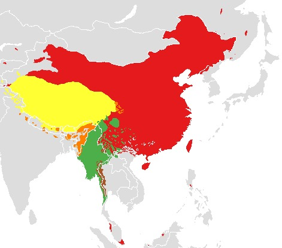
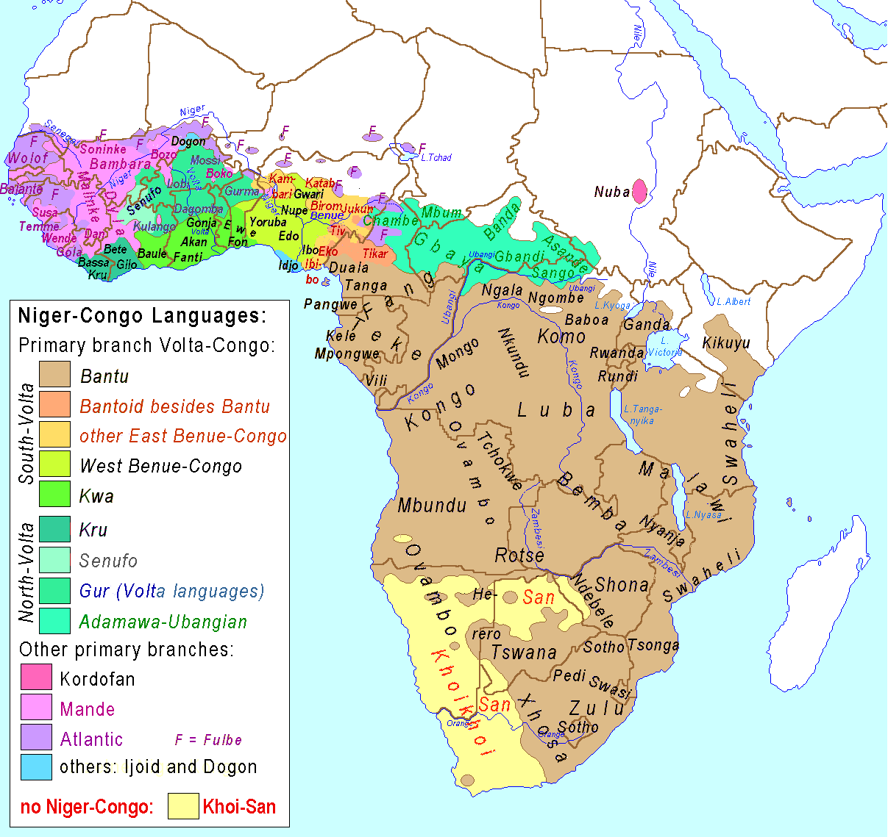
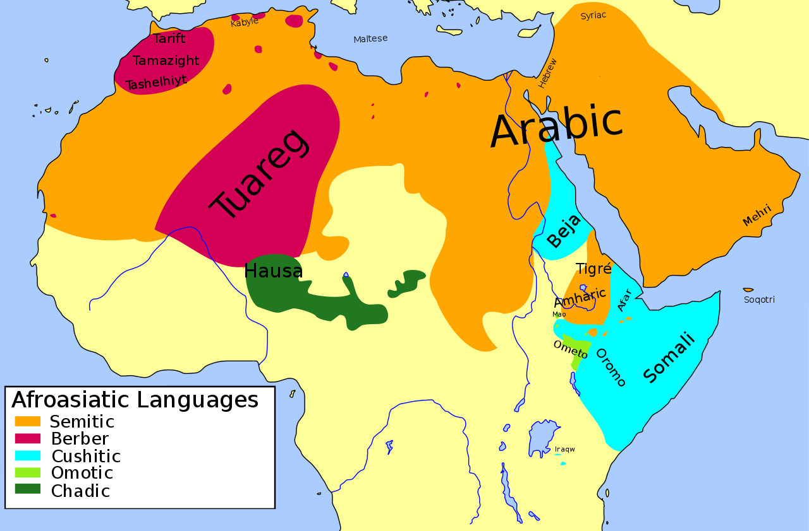
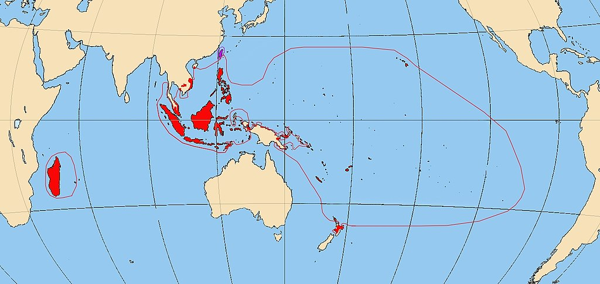
… there are many, MANY more language families
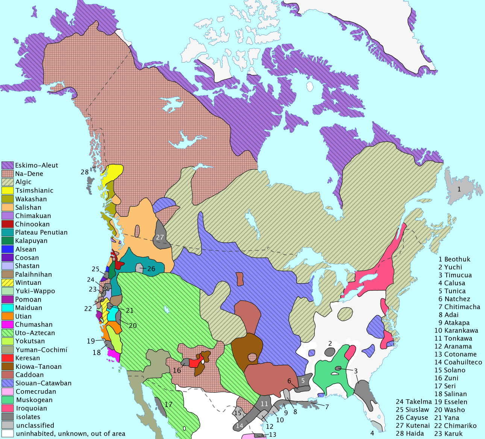
As of 2010, 370,000+ people reported speaking an Indigenous language in the US
130,000+ in Canada
Millions more in Central America
Many tribes and groups are working actively to reclaim and increase use of the languages
Linguists wa these groups and folks within towards these goals
Displacing and combining groups to disrupt identity and force reliance
83% of Indigenous children were forced into ‘Boarding Schools’ in the US
Children who spoke their language or engaged in cultural practices were beaten and sometimes killed, taught shame over their identity
These schools continued running through the 1970s, with 10 of them in CA
This was also used extensively in Canada
Languages often do not ‘die naturally’
People still exist who know them and know of them
Nothing is lost that is not forgotten, and Indigenous people are still here
Do not let the people who tried to kill these groups claim to mourn and move on
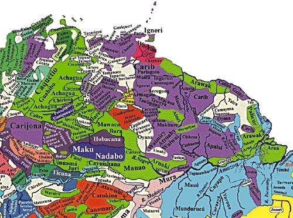
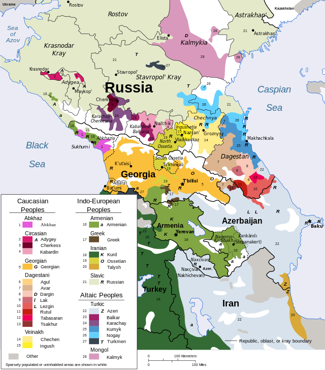
Wow… that’s a lot of language families!
Languages where we have found no contemporary relatives or ancestors
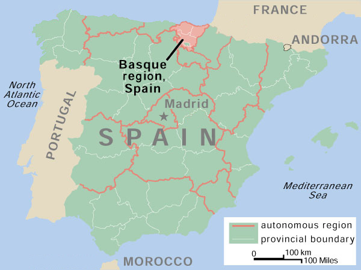
Ainu (spoken in Japan)
Karok (spoken in California)
Korean (spoken in Korea)
Natchez (spoken in MS/LA, now OK)
Zuni (spoken in New Mexico)
The postulated human mother-tongue
This requires reconstructing based on reconstruction
No written records have been found to exist
This makes the assumption that humans only developed language once!
‘Language’ vs. ‘Dialect’ is political, not linguistic
Dialects of a ‘mother language’ which grow apart become ‘daughter languages’
This begets ‘language families’
We find these relations by looking for cognates, sound correspondences, shared features, and by doing reconstruction
We can’t always find relatives for languages.